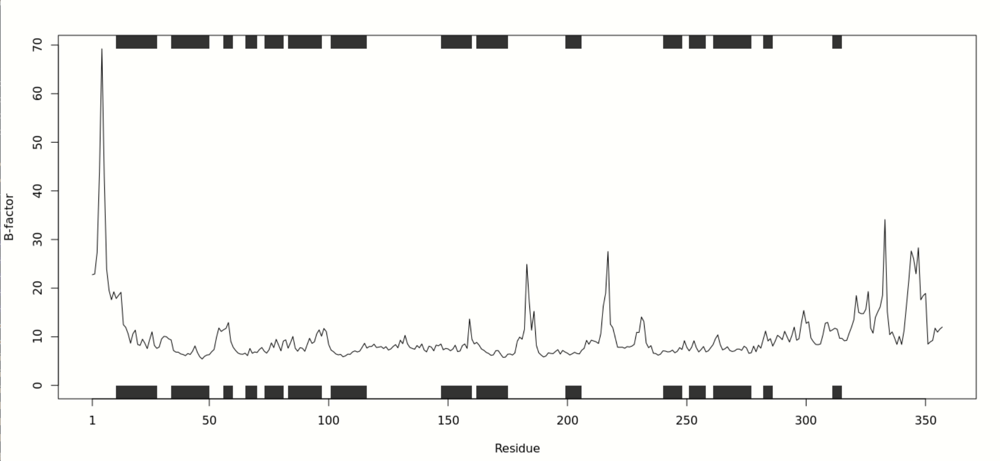

To discover the innate structural properties of manganese peroxidase (MnP), we operated molecular dynamic simulation analysis on Gromacs.
First, though the analysis of the track file of MD simulation, RMSD
Fig. 1 Average RMSD value of MnP at different temperatures.
We also obtained the RMSF curve (Fig. 2) under four
reaction
temperatures of 288.15K, 313,15 K, 338.15 K, and 400 K through the analysis of the track file of
MD
simulation. The curve revealed that it was mainly position 228-233 residues of MnP that were
most sensitive to
temperature, thus facilitating the later construction of single mutation library. Meanwhile, we
compared the
RMSF
Fig. 2 The RMS value of each residue of MnP at different temperatures.
Fig. 3 MnP B-Factor plot.This curve reflects the thermostability of each amino acid residue of the MnP.
The secondary structure of MnP was also simulated and the results revealed through the Ramachandran plot and salt bridges.
As shown in Fig. 4, the white area shown in the
Ramachandran
plot shrank with the increase of temperature, which represented the disruption of MnP’s
structure
Fig. 4 MnP Ramachandran plot at different
temperature. This is a graphical
illustration for visualizing protein backbone energetic position in terms of torsion angles
(
Moreover, its secondary structure (
Fig. 5 MnP secondary structure changes with temperature.
After building the library by FoldX
Table. 1 Calculated amino acid residue sets at available mutation sites under different ΔΔG values.
| Residue No. ΔΔG | 35 | 39 | 177 |
|---|---|---|---|
| ΔΔG <0.5 | E | E | A, H, L, M, R, T, Y |
| 0.5<ΔΔG <2.0 | E | E | A, H, L, M, R, T, Y, K, S |
| 2.0<ΔΔG <2.5 | E, D | E | A, H, L, M, R, T, Y, Q |
| 2.5<ΔΔG <3.0 | E | E, D | A, H, L, M, R, T, Y |
We constructed the sequence library of the mutated enzyme, predicted
Fig. 6 MnP scaled_effect.The scatter points in the figure are composed of the first principal component of PCA and the second principal component of PCA. Variant effect’s color reflects the confidence of scaled_effect.
While such process was carrying on, we calculated the ectopic dominance of the protein after mutation through PLMC, and expressed the distance matrix (Fig. 7) between its amino acids through the MATLAB code construction, which was helpful to better understand the effect of mutation on the surface of the protein.
Fig. 7 MnP PLMC module analysis and the distance matrix of amino acid resideues.
[1] Berendsen, H. J., van der Spoel, D. & van Drunen, R. GROMACS: a message-passing parallel molecular dynamics implementation. Computer physics communications 91, 43-56 (1995).
[2] Sutherland, G. R. & Aust, S. D. The effects of calcium on the thermal stability and activity of manganese peroxidase. Archives of Biochemistry and Biophysics 332, 128-134 (1996).
[3] Humphrey, W., Dalke, A. & Schulten, K. VMD: visual molecular dynamics. Journal of molecular graphics 14, 33-38 (1996).
[4] Delgado, J., Radusky, L. G., Cianferoni, D. & Serrano, L. FoldX 5.0: working with RNA, small molecules and a new graphical interface. Bioinformatics 35, 4168-4169 (2019).
[5] Ding, Y., Cui, K., Guo, Z., Cui, M. & Chen, Y. Manganese peroxidase mediated oxidation of sulfamethoxazole: Integrating the computational analysis to reveal the reaction kinetics, mechanistic insights, and oxidation pathway. Journal of Hazardous Materials 415, 125719 (2021).
[6] Fleishman, S. J. et al. RosettaScripts: a scripting language interface to the Rosetta macromolecular modeling suite. PloS one 6, e20161 (2011).
[7] Rohl, C. A., Strauss, C. E., Misura, K. M. & Baker, D. Protein structure prediction using Rosetta. Methods in enzymology 383, 66-93 (2004).
[8] Goldman, M. & Pruitt, L. Comparison of the effects of gamma radiation and low temperature hydrogen peroxide gas plasma sterilization on the molecular structure, fatigue resistance, and wear behavior of UHMWPE. Journal of biomedical materials research 40, 378-384 (1998).
[9] Negi, S. S., Goldblum, R. M., Braun, W. & Midoro-Horiuti, T. Design of peptides with high affinity binding to a monoclonal antibody as a basis for immunotherapy. Peptides 145, 170628 (2021).